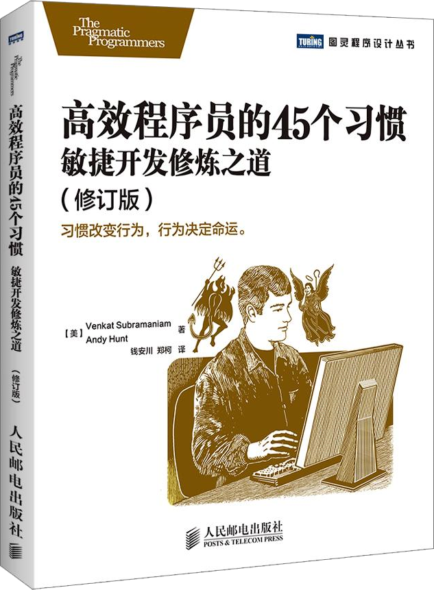

注：【】部分为笔者心得，非原文摘抄。
- 越早发现问题，就越容易修复问题。
- 敏捷开发就是在一个高度协作的环境中，不断地使用反馈进行自我调整和完善。
- 【小步规划、小步前进、小步修正，只要持续这个循环过程，就能积小步以至千里。】
- 为了节省项目的时间而走愚蠢的捷径是会付出巨大代价的。
- 敏捷依赖人，而不是依赖项目的甘特图和里程表。
- 【先选择目标，再制定路线。】
- 重点是做事。
- 勇于承认自己不知道答案。
- 一次又一次的快速修复，每一次都不探究问题的根源，久而久之就形成了一个危险的沼泽地，最终会吞噬整个项目的生命。
- 只有理解了问题，才能进行有效的改变。
- 不要让开发人员完全孤立地编写代码。
- 投入时间和精力保持代码的整洁。
- 在一个需要紧密合作的开发团队中，如果能稍加注意礼貌对待他人，将会有益于整个团队关注真正有价值的问题。
- 负面的评论和态度会扼杀创新。
- 把重点放在解决问题上，而不是去极力证明谁的主意更好。
- 你不需要很出色才能起步，但是你必须起步才能变得很出色。——Les Brown
- 能容纳自己并不接受的想法，表明你的头脑足够有学识。——亚里士多德
- 团队中的每个成员都应该意识到权衡的必要性。
- 设计充满了妥协，成功属于意识到这一点的团队。
- 鼓起勇气去面对，是扫除障碍的唯一途径，否则问题就会进一步恶化下去。
- 即使你已经在正确的轨道上，但如果只是停止不前，也仍然会被淘汰出局。——Will Rogers
- 如何才能跟上技术变化的步伐：
- 迭代和增量式的学习；
- 了解最新行情；
- 参加本地的用户组活动；
- 参加研讨会议；
- 如饥似渴地阅读。
- 不同才能和背景的人混在一起，是一个非常理想的学习环境。
- 优秀的管理者会重用那些能提高其他团队成员价值的人，因此帮助别人提高也直接有助于你的职业生涯。
- 相比硬件，开发者的时间才是紧缺和昂贵的资源。
- 在学习一门新技术的时候，多问问自己，是否把太多旧的态度和方法用在了新技术上。
- 不能只满足于别人告诉你的表面现象，要不停地提问直到你明白问题的根源。
- 更加具备远见，保持不同的开发节奏，这样敏捷项目的所有事情就不会突然同时发生，也不会随机发生，时间也不会不可预知。
- 真正的敌人是变化。
- 开发者及项目经理能做的一个最重要的决定就是：判断哪些是自己决定不了的，应然让企业主做决定。
- 开发者、经理或者业务分析师不应该做业务方面的决定。用业务负责人能够理解的语言，向他们详细解释遇到的问题，并让他们做决定。
- 如果你自己都不清楚所谈论的东西，就根本不可能精确地描述它。——约翰·冯·诺依曼
- 好的设计应该是正确的，而不是精确的。也就是说，它描述的一切必须是正确的，不应该涉及不确定或者可能会发生变化的细节。
- 【根据需要而不是根据喜好或流行趋势来选择技术。】
- 任何时候只要你没有准备好，那就是敌人进攻你的最佳时机。
- 在代码提交之前，找出可以避免破坏系统的方法。
- 保证你的系统随时可以编译、运行、测试并立即部署。
- 代码集成是主要的风险来源，要想规避这个风险，只有提早集成，持续而有规律地进行集成。
- 质量保证人员要像测试应用一样测试部署。
- 软件开发的成功就在于最后你离客户的期望有多近。
- 对付大项目，最理想的办法就是小步前进。
- 发布带有最小且可用功能块的产品。每个增量开发中，使用 1-4 周左右迭代周期。
- 让团队和客户一起，真正地在当前项目中工作，做具体实际的评估，由客户控制他们想要的功能和预算。
- 如果没有到位的单元测试，不要进行任何设计和代码修改。
- 测试驱动开发（Test Driven Development）可以让你编写代码之前深思熟虑将如何用它，这会迫使你去思考它的可用性和便利性，并让你的设计更加注重实效。
- 不同的环境，就有不同的问题。
- 为核心的业务逻辑创建测试。
- 每一个抱怨的背后都隐藏着一个问题。
- 代码要清晰地表达意图。
- 设计软件有两种方式：一种是设计得尽量简单，以至于明显没有缺陷；另一种则是设计得尽量复杂，以至于没有明显的缺陷。——Charles Antony Richard Hoare
- 代码清晰程度的优先级应该排在执行效率之前。
- 【“用代码说话”的第一步是编写“会说话”的代码。】
- 考虑性能、便利性、生产力、成本和上市时间。如果性能表现足够了，就将注意力放在其它因素上。不要为了感觉上的性能提升或者设计的优雅，而将设计复杂化。
- 在很短的编辑-构建-测试循环中编写代码。
- 除非有不可辩驳的原因，否则不要使用模式、原则和高难度技术之类的东西。
- 让类的功能尽量集中，让组件尽量小。
- 将警告视为错误。
- 我不仅发挥了自己的全部能力，还将我所仰仗的人的能力发挥到极致。——伍德罗·威尔逊
- 架构师必须写代码。
- 实行代码集体所有制。
- 站着开会可以让团队达成共识，并保证会议言简意赅而不跑题。
- 新系统的设计者必须要亲自投入到实现中去。——Donald E. Knuth
- 给别人解决问题的机会。
- 绝不要提交尚未完成的代码。
- 要寻找深藏不露的 Bug，正式地进行代码检查，其效果是任何已知形式测试的两倍，而且是移除 80%缺陷的唯一已知办法。——《估算软件成本》Capers Jones
- 及时发布进展状况、新的想法和目前正在关注的主题，而不要等着别人来问项目状态如何。
- 一灯能除千年暗，一智能灭万年愚。——慧能